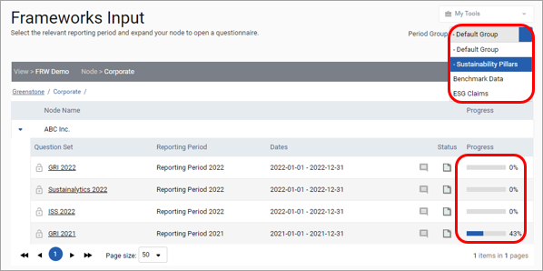
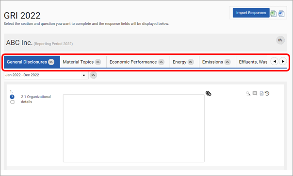
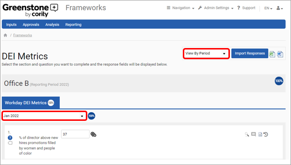
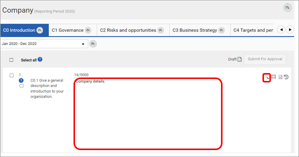
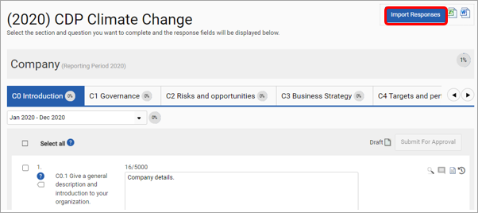
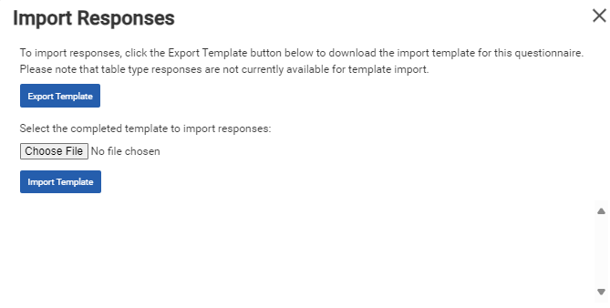
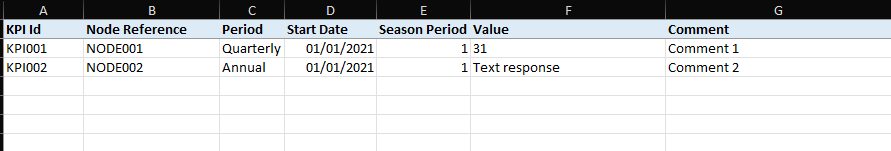
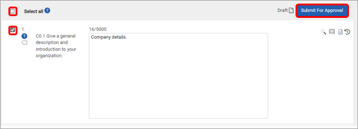

Step 1
Users can respond to questions which are assigned to their user group and to a node which they have access to. Click on ‘Inputs > Frameworks Questionnaires’ to be able to see which nodes have questionnaires assigned to them. On the right is a status bar showing the completed progress of each questionnaire. The Period Group can be changed in the top right list. To open a questionnaire, select the Question Set you would like to answer.

Step 2
The user can toggle between the sections of the questionnaire using the tabs available at the top of the page.

Users can select either ‘View By Question’ or ‘View By Period’. View by question allows users to view a single question for each of the time frames (months or quarters) data is being collected for. The dropdown under the section name allows users to change the question they are viewing. Alternatively, view by period allows all the questions from a given section and time frame (month or quarter) to be viewed at once. The dropdown under the section name can be used to toggle between time frames. The toggle selection is only available if all questions in the questionnaire have the same reporting period, for example, all monthly questions and dependencies are not used.

Responses can be added in a variety of ways. The simplest of these is to type or select your response into the response field. Alternatively, selecting the magnifying glass to the right of the response area triggers a pop-up containing responses from previous time periods, and linked questions.

Responses can also be added in bulk using the Import Responses button. Select Import responses to trigger a pop-up. Select the Export Template button and add your response to the file. Please note, responses must be added in a text format. When you are finished adding responses, save the file and upload it using the buttons available in the pop-up.


Finally, responses can be uploaded via SFTP. Set up is required before SFTP becomes available. Please see the Secure File transfer protocol (SFTP) setup section for details on how to do this. SFTP uploads must be made using the standard template pictured below.
The fields available within this template are:

For adding table (matrix) question responses using the upload template, the Table Column Number, Table Row Number, and Table Column Title columns are provided in the Excel template and Table Column Number and Table Row Number columns should be used in the SFTP template.
Each table type question will be ordered by Table Column Number, then Table Row Number, so that one row in the template equates to one cell in the table question response. For example, if you want to add data to column one, row two in your table question response, in your upload template you would have:
Table Column Number = 1, Table Row Number = 2, and the other cells in that row of the template (including the Response) filled in as you would before.
If there is a response for an existing table type question (even if just partial) prior to exporting the template, the corresponding row(s) will be pre-populated in the template.
When you are finished adding responses to a questionnaire select the Save button. If approvals have been switched on for the questionnaire, select the questions you would like to submit for approval using the tick-box next to a question or the select all button at the top of the response area.

A number of additional icons are available in the inputs section which can be used to carry out various actions. These are summarized in the table below.
| Icon | Use |
| Attach supporting documents to a response. These will be available in the notes & files section in utilities and for approvers. | |
| View and copy previous responses or responses from linked questions | |
| Add comments to provide additional context to a response. Comments can also be added via excel import or SFTP. | |
| View approvals commentary for a response | |
| View the audit log of a question including the details of who answered, made edits, approvals, or rejections and when. |